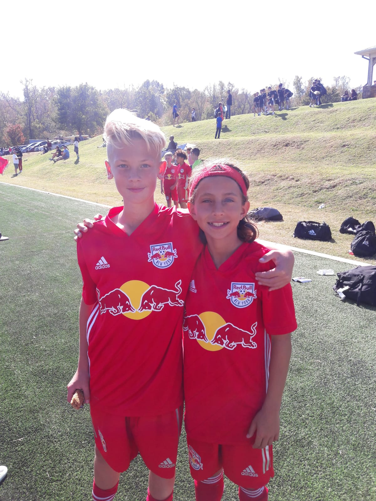

Early individual development01 · Zidane Yañez
FOUNDATION TO
FIRST TEAM.
Zidane signed an NYCFC Homegrown first-team contract at 15. The contract is a milestone, not the measure: development at the highest level cannot be reduced to weekend results, selection status, or highlight reels.
- 01 Technical clarity
- 02 Game intelligence
- 03 Identity under pressure